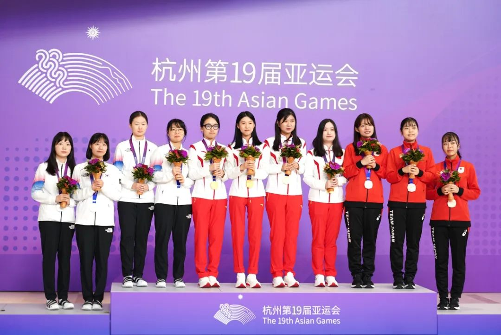

| 围棋起源 | 围棋起源
围棋起源于中国。它比象棋出现得更早,至少已有2500多年的历史,是世界上最古老的棋类。在古代,帝王将相、文人学士、才人淑女都喜爱这种棋艺。它一种策略型 两人棋类游戏，中国古时称“弈”，西方名称“Go”。流行于东亚国家（中、日、韩、朝），属琴棋书画四艺之一。围棋别名有弈、烂柯、乌鹭、方圆、木野狐、略技、星阵等。 围棋历史： 围棋起源于中国，“琴棋书画”之“棋”，指的就是围棋。晋朝人张华在《博物志》中说：“尧造围棋以教子丹朱，以闲其情。”就是说围棋是尧发明的，用来教育儿子。《论语》中也提到了围棋游戏，称之为“博弈”，《孟子》中有对于围棋高手奕秋的记载。作为一种传统智力竞技游戏，围棋已有四千多年的历史。
2008年，围棋由北京棋院申报，入选第二批传统体育、游艺与杂技项目。项目序号：790，项目编号：Ⅵ-18。 国际影响： 围棋这样一项古老而现代，由文化入体育，又归根为游戏的围棋，烙印着鲜明的中国特色，蕴含着深邃的中华文化，影响着千千万万中国人的人格，将其称之为“国艺”，是否更恰如其分？ 百年以来，以西方文化为代表的奥林匹克主义占据着体育世界的统治地位。 这是近代以来西方资本主义国家政治、经济占优，在文化上的体现。 伴随中国国家实力的增强，国际话语权的提高，厚载着博大精深的中 华文化的围棋完全可以与奥林匹克运动相媲美，完全有能力更加有必要发出在体育运动中的“中国声音” 围棋冠军： 10月3日，杭州第十九届亚洲运动会围棋赛事全部在杭州智力大厦结束。上午结束的女子团体赛决赛，中国队战胜韩国队，获得冠军；下午结束的男子团体赛决赛，中国队不敌韩国队，获得亚军。收获本队亚运会首金的中国队，以一金、两银的成绩位居奖牌榜首位。韩国队获得一枚金牌、一枚银牌、一枚铜牌；中国台北队获得一枚金牌；日本队获得两枚铜牌。  今天上午结束的女子团体决赛，李赫屠龙胜韩国头号女棋手崔精，为中国队先得一分；随后吴依 铭中盘胜金恩持，中国队锁定冠军！最后结束的一局，於之莹优势下遭吴侑珍逆转，以3/4子落败，但不影响中国队获胜夺冠！ 由於之莹、李赫、吴依铭、汪雨博组成的中国女子围棋队，为中国围棋取得亚运会金牌零的突破！女团颁奖仪式在中午举行，亚运会围棋赛场上终于奏响了中华人民共和国国歌，五星红旗高高升起！
|
| 围棋历史 | |
| 国际影响 | |
| 围棋冠军 | |
| 返回首页 |